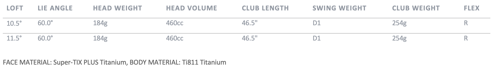

XXIO Prime Driver
Experience the unprecedented speed and lightweight feel of the new XXIO Prime Driver.
Luxury is Light
Designed to help seasoned golfers with moderate swing speeds achieve straight ball flight with enhanced distance, the XXIO Prime is the gold standard in luxury performance.
Performance
- Increased swing speed
- Added distance
- Straight flight
Features
- Luxury materials
- Built-in forgiveness
- Lightweight construction
TECHNOLOGY
Rebound Frame
Rebound Frame is an alternating pattern of stiff and flexible zones within the XXIO Prime Driver that focuses more of your impact energy into the golf ball. It increases ball speed and distance on every strike, especially center-face impacts.
Flat Cup Face
For off-center strikes with the Driver, Fairway Woods, and Hybrids, the new Flat Cup Face expands the high COR region of each club face, increasing your ball speed and distance.
Draw Bias Bulge Design
This new face curvature on the Driver, Fairway Woods, and Hybrids is slightly closed at the heel and open near the toe. The resulting gear effect helps produce a desirable right-to-left shot shape—even if the driver face is open at impact.
Weight Plus
Weight Plus is a counterbalancing technology that places weights in the end of each shaft, located behind your hands as you grip the club. That grip weight helps push the club head up through your backswing for a more consistent top of swing position. And as you begin the downswing, the weight brings your hands into position, keeping your arms closer to your body for a squarer face at impact.
Star Frame
XXIO Prime’s Driver uses a Star Frame rib structure to support a much thinner sole than previous generations. That thinner sole allowed for extra mass low and deep, producing a higher launch and adding forgiveness off the tee.
Super-TIX PLUS Titanium Face
Each XXIO Prime Driver, Fairway Wood, and Iron face is made from Super-TIX PLUS Titanium, an incredibly strong yet lightweight alloy that adds speed to all your shots.
Lightweight Construction
The new XXIO Prime SP-1100 Shaft, with TORAYCA T1100G carbon fiber and NANOALLOY resin, is extremely lightweight to help produce more swing speed and distance with its smooth, easy-to- swing profile. The softer tip section also makes it easier to close the club face and strike the ball square.
XXIO Prime Driver Specs
XXIO Prime Driver PRICE
999 € / 1 099 CHF / 10 500 SEK / 899 £